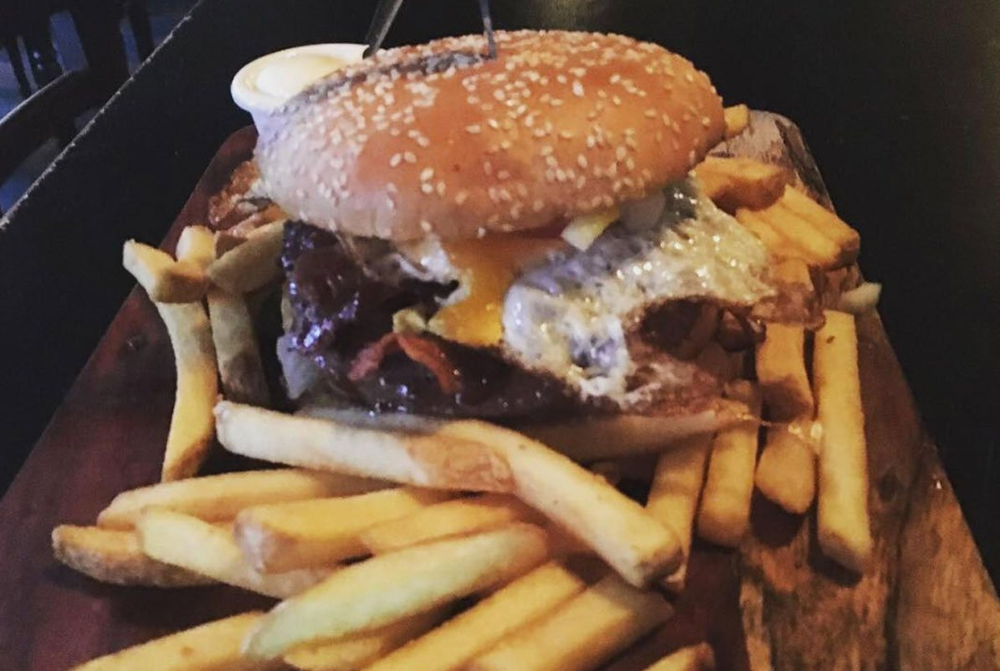
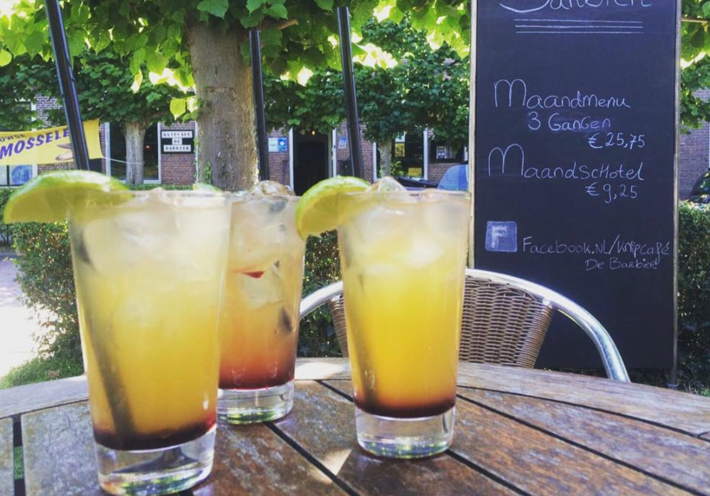
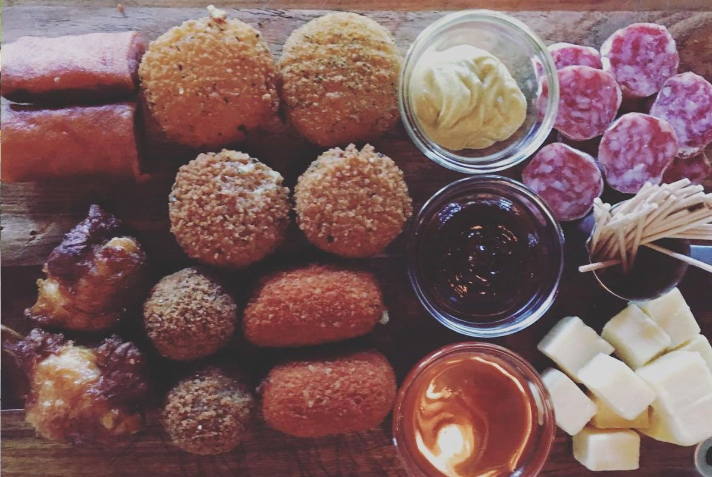
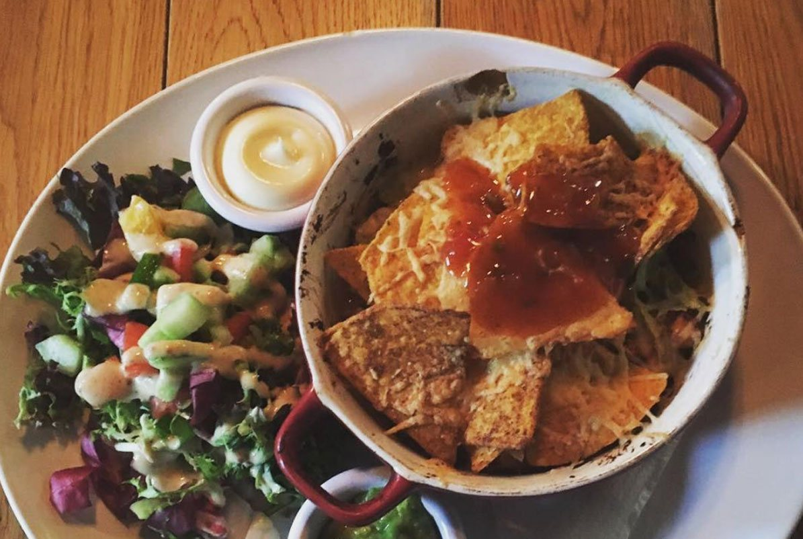
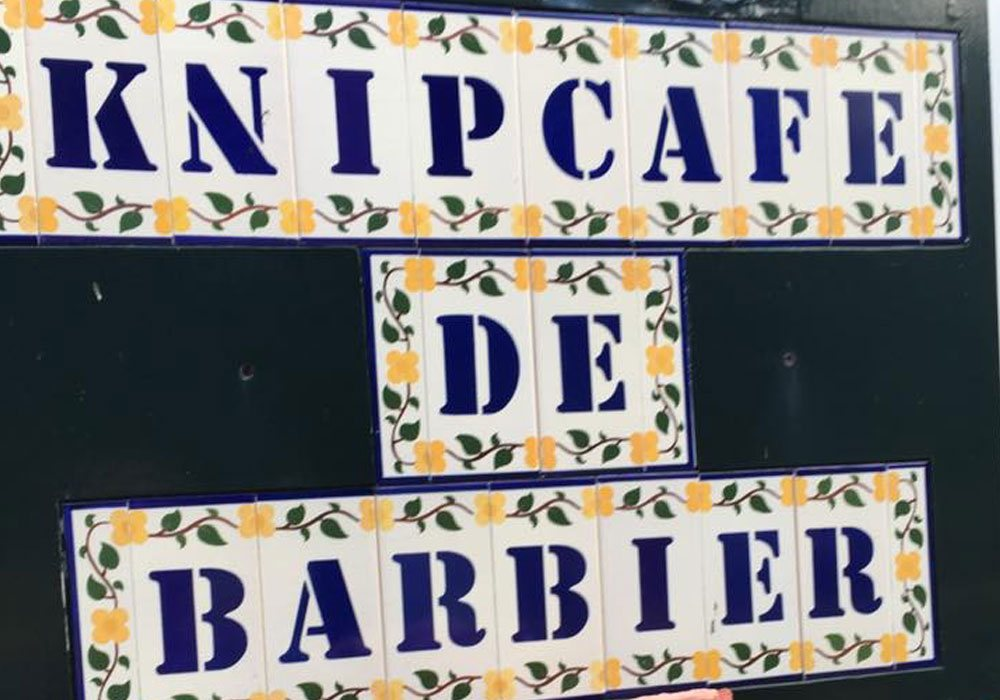
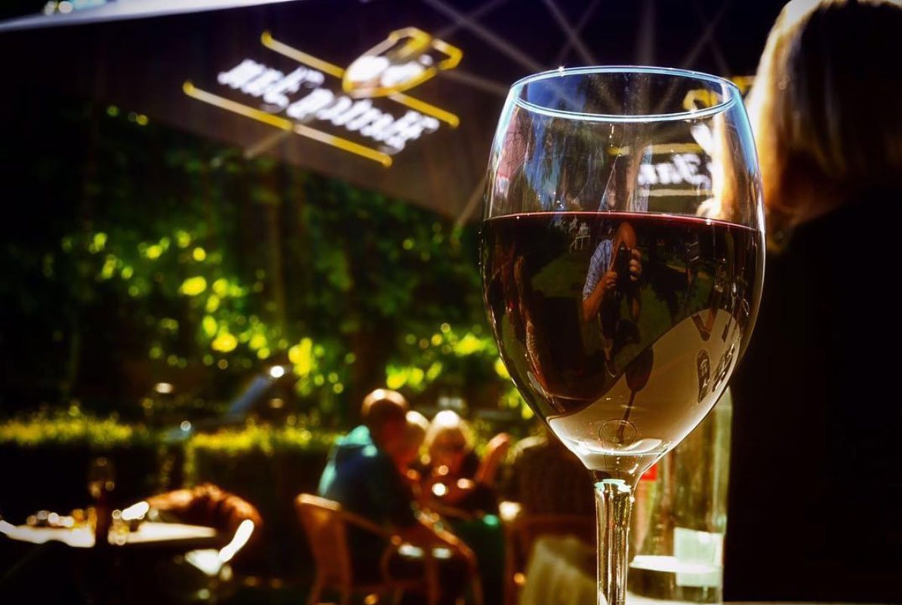
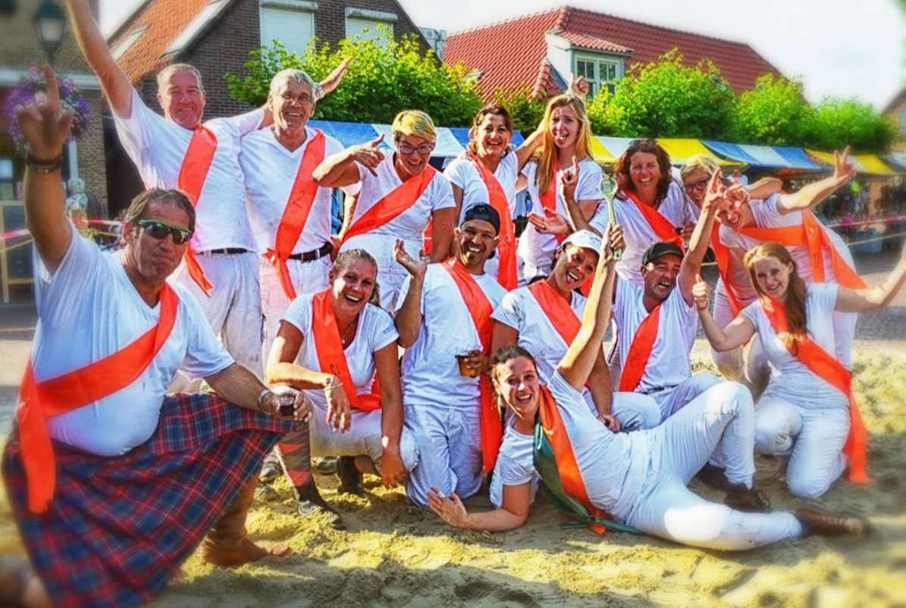
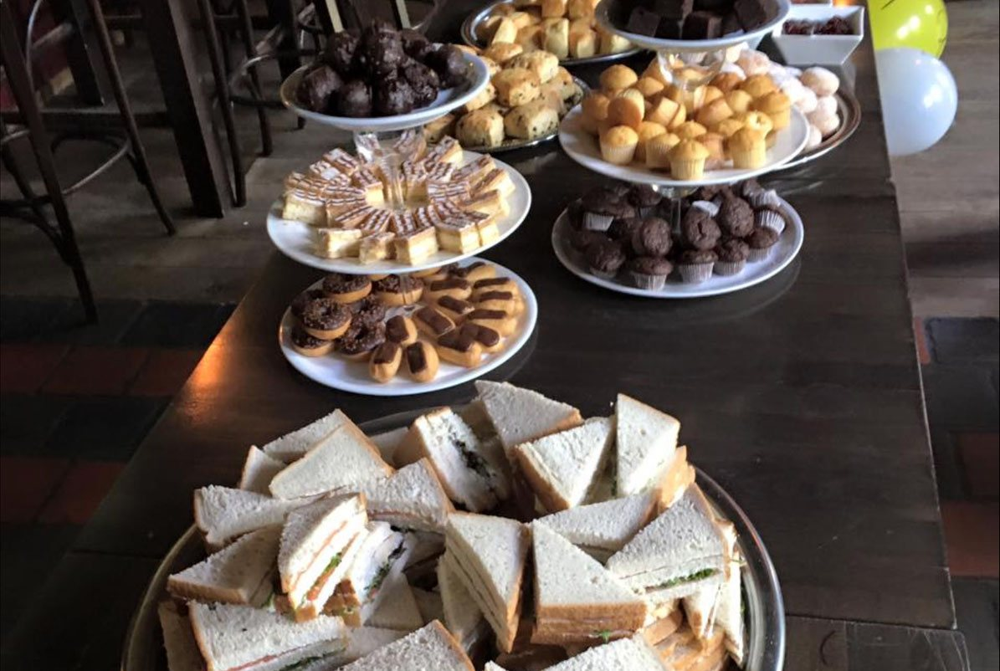

Vlees & vis
Biefstuk Barbier, huisgemaakte spareribs, stoofvlees op Vlaamse wijze, de Barbier burger en sliptong in roomboter.
vanaf € 17,-Meer info

Lunch, diner en borrelhapjes, binnen of op het terras. Vlakbij het Watersnoodmuseum. En wie wil, laat bij ons meteen zijn haar knippen: we zijn deels eetcafé, deels kapsalon.
Eerlijke eetcafégerechten, van een broodje Barbier tot spareribs en sliptong. Al ons rundvlees komt van boer Bos uit Ouwerkerk.

Biefstuk Barbier, huisgemaakte spareribs, stoofvlees op Vlaamse wijze, de Barbier burger en sliptong in roomboter.

Bitterballen, kaasstengels, nacho's Barbier en de megamix met tien snacks. Lekker bij een drankje op het terras.

Friet, snacks, een kapsalon of spareribs: van onze snackkaart kunt u ook afhalen.

De Barbier is deels eetcafé, deels kapsalon. Dat maakt ons net even anders dan andere cafés. U kunt hier lunchen of een hapje eten, en in dezelfde zaak terecht voor een knipbeurt.
Wilt u geknipt worden? Bel of app ons even, dan spreken we een moment af.
U vindt ons aan de Ring, midden in het dorp en vlakbij het Watersnoodmuseum. Bij mooi weer zit u op het terras onder de bomen, met uitzicht op de rustige dorpsring.



Komt u met een grotere groep, voor een verjaardag of een uitje met de club? Voor groepen hebben we speciale acties. Vraag gerust naar de mogelijkheden, dan denken we met u mee.
Stuur ons een berichtje, dan zetten we een tafel voor u klaar.
Vul in wanneer u wilt komen, dan opent WhatsApp met uw bericht klaar. Ook voor een knipbeurt of een groep kunt u ons een bericht sturen.
Deels eetcafé, deels kapsalon. Aan de Ring van Ouwerkerk.